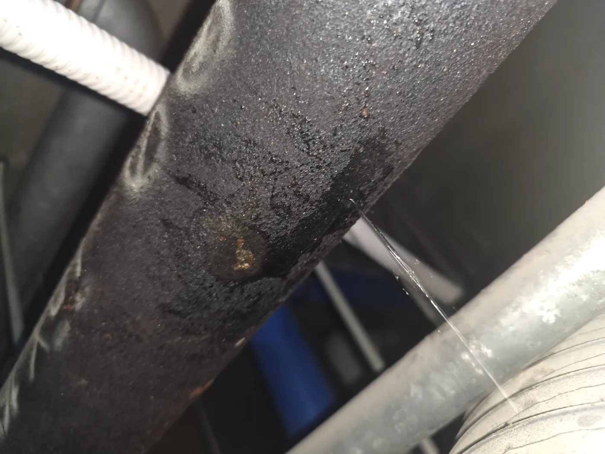
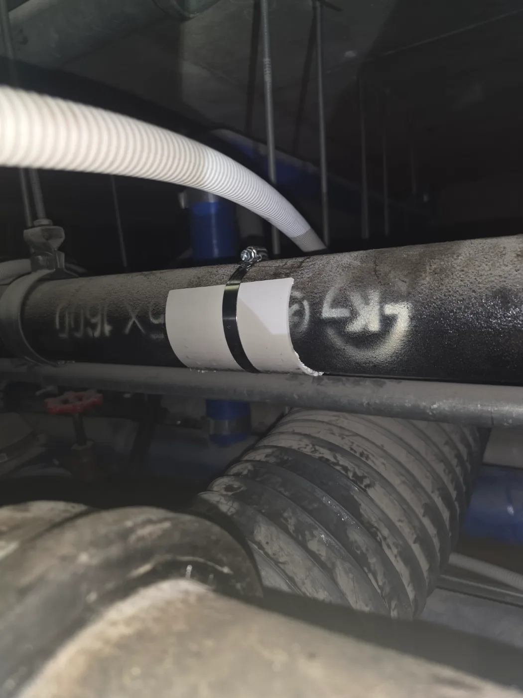

구로구 구로동 배관공사, 현장 도착 후 진단
구로구 구로동 빌딩에서 천장 내부 누수가 발생했다는 요청을 접수한 신라건축설비는 누수 점검과 배관보수에 필요한 장비를 준비해 신속하게 현장으로 출동했습니다. 숙련된 기술자가 천장 내부의 여러 배관과 주변 시설물을 확인한 결과, 금속 배관의 국부적인 손상 부위에서 물이 가느다란 줄기로 분사되고 있었습니다.
천장 내부에는 급수배관과 전선, 환기 덕트 등 여러 설비가 복잡하게 설치되어 있어 물이 떨어지는 위치만 보고 실제 누수 지점을 단정해서는 안 됩니다. 물이 배관 외벽을 따라 이동할 수 있기 때문에 배관을 구간별로 확인하며 누수의 시작점을 정확히 찾았습니다.
1단계: 증상 확인과 필요한 장비 작업
먼저 누수 피해가 확대되지 않도록 해당 배관의 사용 상태를 조절하고 주변 설비를 보호했습니다. 물이 분사되는 부분을 가까이에서 확인해 손상 범위와 배관 외벽의 상태를 점검했습니다. 배관 전체가 아닌 특정 지점에 집중된 누수로 판단하고, 해당 부위를 보강할 수 있도록 표면의 물기와 오염물을 정리했습니다.

2단계: 원인 구간 처리와 정상 작동 확인
손상된 배관 부위에 곡면에 맞는 보강재를 밀착시키고 금속 고정 밴드를 사용해 움직이지 않도록 체결했습니다. 배관 내부의 압력을 받을 때 틈이 다시 벌어지지 않도록 누수 지점을 중심으로 보강 범위를 설정했습니다. 작업 후 배관에 다시 물을 공급해 보수 부위에서 추가로 물이 새거나 압력에 의해 보강재가 움직이지 않는지 확인했습니다.

작업 결과와 재발 방지 안내
배관 손상 부위를 보강한 뒤 분사되던 물줄기가 멈추고 추가 누수가 발생하지 않는 것을 확인했습니다. 금속 배관은 장기간 사용하면 부식과 노후화로 국부적인 핀홀 누수가 발생할 수 있습니다. 한 지점에서 누수가 발생했다면 주변 배관도 비슷하게 노후화됐을 가능성이 있으므로 인접 구간의 부식 상태를 함께 점검하는 것이 좋습니다.
신라건축설비는 구로구 구로동을 비롯한 서울 전 지역과 경기권에 신속하게 출동하여 빌딩 배관누수와 배관보수공사를 진행합니다. 누수 지점 확인부터 긴급 보강, 손상 배관의 부분 교체와 대형 배관공사까지 현장 상태에 맞춰 자체적으로 대응합니다. 변기막힘·싱크대막힘·하수구막힘 전문성을 기반으로 천장 내부와 공용설비의 복잡한 배관 문제까지 해결합니다.
최종 조치: 천장 내부 배관을 따라 누수 지점을 확인하고 물이 분사되는 손상 부위를 정리했습니다. 배관 외부에 보강재를 밀착시킨 뒤 금속 고정 밴드로 단단히 체결하여 누수를 차단하고 재점검했습니다.
현장 방문 전 확인하는 비용과 작업 범위
신라건축설비는 현장 증상과 배관 구조를 확인한 뒤 필요한 작업과 예상 비용을 안내합니다. 단순 관통으로 해결되는지, 배관내시경·석션·고압세척 또는 추가 장비가 필요한지는 현장 상태에 따라 달라집니다. 출장비와 야간 작업비, 추가 장비 비용이 발생할 수 있는 경우 작업 전에 먼저 설명하고 동의를 받은 범위에서 진행합니다.
업체를 선택할 때 확인할 사항
무조건적인 ‘0원’ 표현보다 실제 작업 범위, 추가 비용 조건, 사용 장비와 사후 대응 기준을 확인하는 것이 중요합니다. 해결되지 않았을 때의 비용 기준과 작업 후 동일 증상 발생 시 점검 범위를 사전에 문의해두면 불필요한 분쟁을 줄일 수 있습니다.
구로구 배관공사 자주 묻는 질문
공사 전에 견적을 받을 수 있나요?
빌딩 천장 내부에서 물이 떨어지는 증상이 발생했으며, 점검 결과 배관의 한 지점에서 가느다란 물줄기가 지속적으로 분사되고 있었습니다. 방치하면 천장 마감재와 전기시설, 하부 공간으로 피해가 확대될 수 있는 상태였습니다.처럼 증상이 나타나더라도 원인은 현장마다 다를 수 있습니다. 장비와 배관 구조를 확인한 뒤 필요한 작업 범위를 안내합니다.
추가 공사가 생기면 바로 진행하나요?
작업 전 증상과 현장 여건을 확인해 예상 범위와 비용을 먼저 안내합니다. 변기 탈거, 장비 추가 투입 또는 공용배관 작업이 필요한 경우 고객 동의 없이 임의로 진행하지 않습니다.
작업 후 A/S는 어떻게 되나요?
완료 후 정상 작동을 함께 확인하고 작업 범위에 따른 사후 안내를 드립니다. 동일 증상이 반복되면 현장 기록을 기준으로 원인을 다시 점검합니다.
배관공사 서울·경기 출동지역
신라건축설비는 구로구 구로동 현장을 포함해 서울 25개 구와 경기도 31개 시·군의 배관 문제를 상담합니다. 현장 거리와 기사 배정 상황에 따라 출동 가능 여부를 먼저 안내드립니다.
서울 전 지역
강남구 · 강동구 · 강북구 · 강서구 · 관악구 · 광진구 · 구로구 · 금천구 · 노원구 · 도봉구 · 동대문구 · 동작구 · 마포구 · 서대문구 · 서초구 · 성동구 · 성북구 · 송파구 · 양천구 · 영등포구 · 용산구 · 은평구 · 종로구 · 중구 · 중랑구
경기도 주요 출동지역
수원시 · 용인시 · 고양시 · 화성시 · 성남시 · 부천시 · 남양주시 · 안산시 · 평택시 · 안양시 · 시흥시 · 파주시 · 김포시 · 의정부시 · 광주시 · 하남시 · 광명시 · 군포시 · 양주시 · 오산시 · 이천시 · 안성시 · 구리시 · 의왕시 · 포천시 · 양평군 · 여주시 · 동두천시 · 과천시 · 가평군 · 연천군